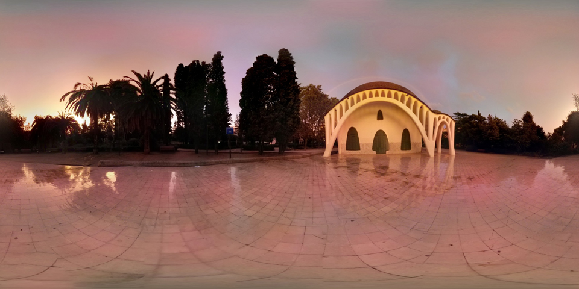
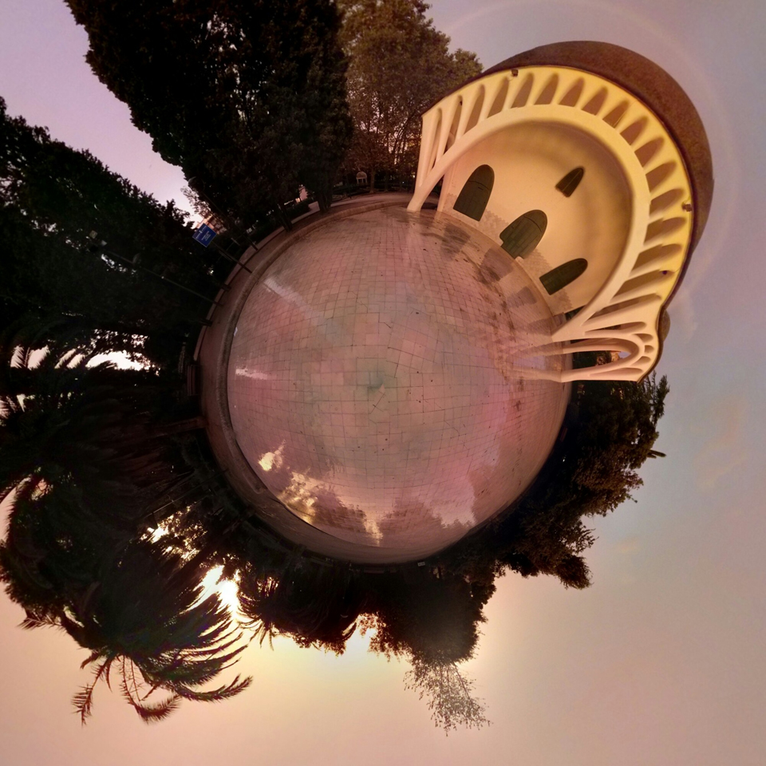
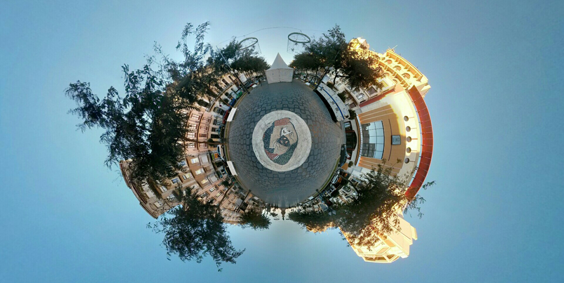

As a hobby, I like making spherical panoramas and uploading them to Google Maps.
Each panorama is composed out of 51 individual pictures taken every 25-30 degrees in both vertical and horizontal axis.
Here there is an example, you can rotate horizontally and vertically by dragging with the mouse:
This is the entire panorama:
And this is a cool "tiny planet" effect you can do by curving the horizon line:
 You can see all the Tiny Planets on my Instagram page here and the panoramas on my Google Maps profile here.